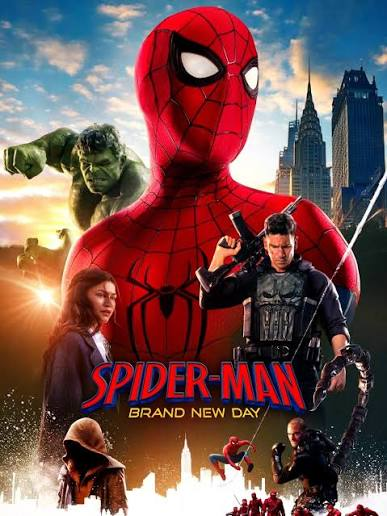

הסרטים המומלצים שלנו
ברוכים הבאים ל-MovieBox! כאן תמצאו סרטים שכדאי לראות - עם תקציר, ז'אנר ודירוג.

שנה 2010
ז'אנר מדע בדיוני, פעולה
דירוג 8.8⭐
.גנב מיוחד נכנס לחלומות של אנשים כדי לגנוב סודות. הפעם הוא מקבל משימה הפוכה: לשתול רעיון
לעמוד הסרט ב- IMDb inception קישור לטריילר
התחלה (SpiderMan)
שנה 2026
ז'אנר מדע בדיוני, פעולה
דירוג 7.9⭐
אחרי 4 שנים שפיטר מחק את עצמו מזיכרון אנשים שאהב הוא שוב יוצא להגן על העיר ולהילחם בפשע
לעמוד הסרט ב- IMDb SpiderMan קישור לטריילרהתחלה (Dexter-Resurrection)
שנה 2025
ז'אנר מתח, פשע, דרמה ומתח פסיכולוגי
דירוג 9.0⭐
לאחר שדקסטר מורגן מתעורר מתרדמת ממושכת מגלה שבנו הריסון ברח ונעלם. הוא יוצא בעקבותיו כדי לנסות לתקן את מערכת היחסים המורכבת ביניהם.
לעמוד הסרט ב- IMDb Dexter-Resurrection קישור לטריילרהתחלה (Law&order)
שנה 1999
ז'אנר דרמה משטרתית
דירוג 8.1⭐
קבוצת בלשים שנועגת לחקור עבירות שונות ואיך ההיסטוריה האישית של הבלשים משפיעה על החלטות שלהם
לעמוד הסרט ב- IMDb Law&Order קישור לטריילר
התחלה (Ha'Hazmana)
שנה 2026
ז'אנר קומדיה
דירוג 7.4⭐
שתי זוגות שכנים מבלים ערב משותף, מה יקרה בסוף הערב?
לעמוד הסרט ב- IMDb Ha'Hazmana קישור לטריילר